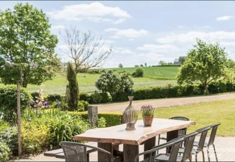
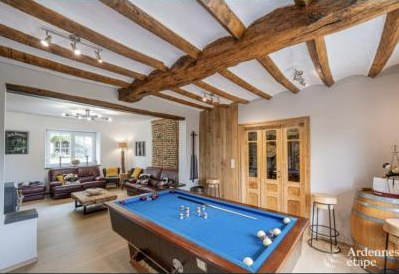

Maredsous (binnenzwembad)
Vakantiehuis voor 13 personen, 3 gebouwen



Plaats 3 in mijn voorkeur. Zwembad gaat op slot, onder het budget, dichtst bij en score 9,5. Nadeel: één koppel slaapt in het tweede gebouw, en op zondag moet je om 17u weg (elders 20u).
Zwembad. Binnenzwembad, privé, 7,8 x 3,2 m, 1,4 m diep, verwarmd tot 28°. Apart gebouw dat op slot gaat, plus rolluik. Sauna ernaast.
Animatie
In en rond het huis
- Binnenzwembad (28°)
- Sauna
- Speelkamer met golfbiljart en darts
- Petanque
- Tuin van 4000 m²
In de buurt (afstand vanaf het huis)
- Railbikes in de vallei van de Molignée (6 km)
- Abdij van Maredsous (4 km)
- Tuinen van Annevoie (12 km)
- Grot La Merveilleuse (13 km)
- Citadel van Dinant (14 km)
- Kajak of boottocht in Dinant (14 km)
Kamerindeling
Ja, alle 4 samen in kamer 2 (tweepersoonsbed + 2 stapelbedden).
| Waar | Kamer | Wie |
|---|---|---|
| Gebouw 1, 1e verdieping | Slaapkamer 2 (tweepersoonsbed + 2 stapelbedden) | Nora, Odiel, Lowie, Yilou |
| Gebouw 1, 1e verdieping | Slaapkamer 1 (tweepersoonsbed + eenpersoonsbed) | Kjell en Eveline + baby (babybed) |
| Gebouw 1, 1e verdieping | Slaapkamer 3 (tweepersoonsbed) | Patrick en Roos |
| Gebouw 2, 1e verdieping | Slaapkamer 4 (tweepersoonsbed) | Jeroen en Kelly |
| Gebouw 2, 2e verdieping | Slaapkamer 5 (tweepersoonsbed) | Tine |
Kosten voor 2 nachten
2 nachten, vr 2/7 tot zo 4/7
| Huurprijs | €1.522 |
| Dossierkosten | €35 |
| Schoonmaak | inbegrepen |
| Water, verwarming, elektriciteit | €200 |
| Afval | €25 |
| Totaal | €1.782 |
Wie betaalt wat
| Per volwassene (1/8) | €222,75 |
| Per kind (1/32) | €55,69 |
| Jeroen, Kelly, Nora en Odiel (2 volw. + 2 kinderen) | €556,88 |
| Roos en Yilou (1 volw. + 1 kind) | €278,44 |
| Patrick (1 volw.) | €222,75 |
| Kjell, Eveline, Lowie en baby (2 volw. + 1 kind, baby gratis) | €501,19 |
| Tine (1 volw.) | €222,75 |
Nog te bevestigen: Yilou moet nog bevestigd worden door Stephanie aan Roos. Gaat Yilou niet mee, dan delen 3 kinderen het kinderdeel en wordt het €74,25 per kind in plaats van €55,69. Roos betaalt dan €222,75.
Waarborg en verplichtingen
Waarborg: €1.000, niet inbegrepen in de totaalprijs.
- Bedlinnen, badhanddoeken en vaatdoeken zelf meebrengen.
- Aankomst tussen 16u en 18u. Vertrek zondag voor 17u.
- Houtblokken optioneel: €5 per mand.
- Bestemd voor familiegroepen. Huisdieren verboden.
- Babybed: niet vermeld, navragen.
Verder: Speelkamer met golfbiljart en darts, tuin van 4000 m², petanque, 6 parkeerplaatsen.
Let op: Twee van de vijf slaapkamers liggen in gebouw 2. Eén koppel slaapt dus niet in hetzelfde gebouw als de kinderen.
Bron: Ardennes-Etape, ref. 105718-02, prijzen voor 12 personen opgevraagd op 24/11/2026.